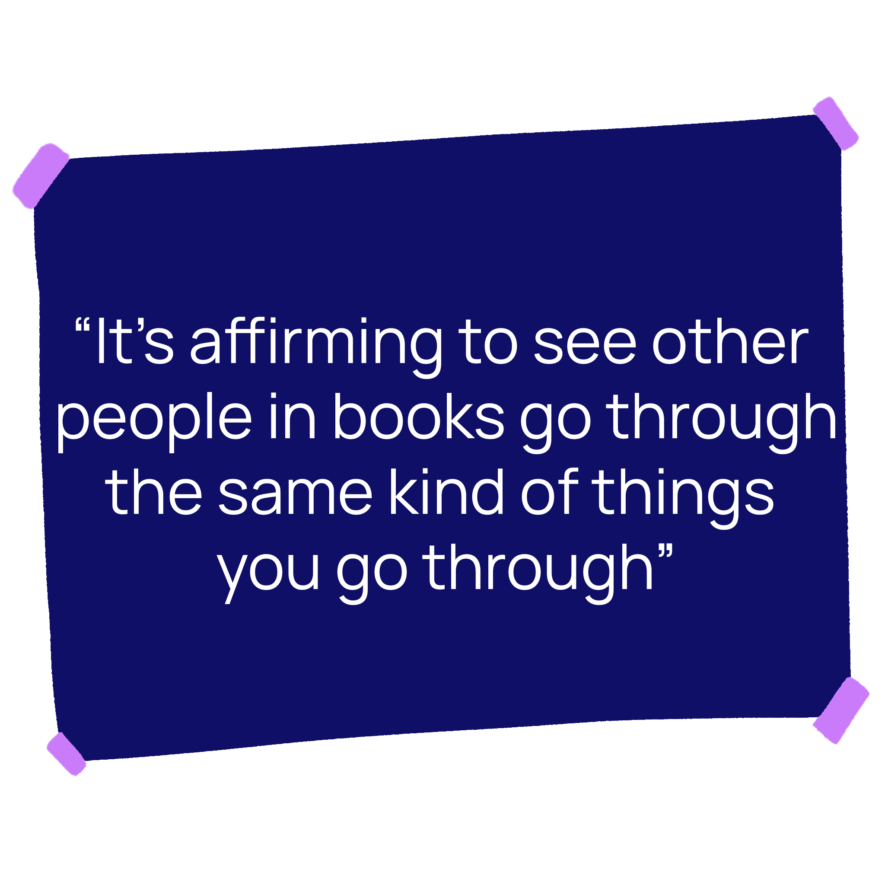
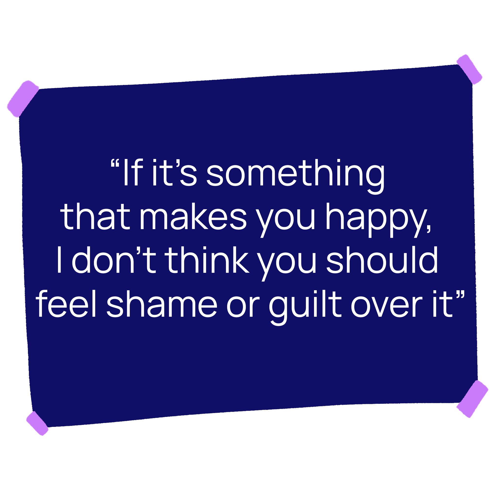

Back then, Gerstein was in her first year of fashion design, a program she describes as “really intense.” Between classes, labs and projects, she was making the 40-minute commute to campus from her home in Thornhill, Ont. every weekday. Bleary-eyed and half-asleep, she would kill time on AO3, reading fluffy fan-written stories about characters from the Harry Potter series. She admits she probably could’ve spent that time studying instead. “But did I want to do that at 6 a.m.? Not particularly.”
Gerstein was a pre-teen when she stumbled across fanfiction.net, a vault of lovingly written fan content about their favourite celebrities and pairings. The sheer volume of fanfiction on the site blew her mind. “Oh My God, there's so many stories,” she remembers thinking. Harry Potter, Gerstein’s fandom of choice, has always been the most popular fandom by far on fanfiction.net. Right now it boasts over 800,000 separate stories, or ‘fics,’ short for ‘fanfictions.’
For the next couple of years, Gerstein threw herself headfirst into the world of fanfiction. She gravitated toward romance, mainly reading stories of a particular pairing: Wolfstar, the non-canonical relationship between Remus Lupin and Sirius Black. She likes romance, she says, because the relationships help to push the plot along and provide a structure to the story. “Either someone's getting together, or they're breaking up and getting back together,” she says. “It helps give the plot a bit more emphasis, a bit more drama.”
 Gerstein also found herself learning from the romance she read. As she watched characters communicate and
solve their problems, she filed those bits of information away under what she thought a healthy relationship
should look like. And although some fics showed unhealthy relationships, she says even those helped her
develop a sense of what romantic love ought to look like. Those fics helped her “figure out red flags and
warning signs I might have had to experience in my real life if I hadn't encountered those first.”
Gerstein also found herself learning from the romance she read. As she watched characters communicate and
solve their problems, she filed those bits of information away under what she thought a healthy relationship
should look like. And although some fics showed unhealthy relationships, she says even those helped her
develop a sense of what romantic love ought to look like. Those fics helped her “figure out red flags and
warning signs I might have had to experience in my real life if I hadn't encountered those first.”
For Ryerson students like Gerstein, reading and writing romance has allowed them to explore their sexuality in a low-risk environment; they can figure out what they like romantically and sexually without the mess and heartbreak that often come with real-life romance. Fictional love can set standards of enthusiastic consent and mutual respect, and serve as a welcome escape from the mundanity of everyday life. Romance can also afford its fans a community of like-minded readers and writers.
A 2017 study commissioned by the Romance Writers of America, a non-profit organization, found that romance is the second-largest fiction genre in the United States, comprising 23 per cent of the market. Romance also features prominently in fanfiction—of all the Harry Potter fics on AO3, for instance, more than 80 per cent contain some form of romantic pairing. Despite the obviously overwhelming popularity of the genre, it continues to be stigmatized. In a 2020 study in Publishing Research Quarterly, Lauren Cameron, a master’s student from Edinburgh Napier University, writes that romance as a genre “still receives little to no respect.” The genre is considered trashy and without value—but romance is far from worthless.
Farah Heron is the Toronto-based author of The Chai Factor and other novels, a rom-com starring a work-focused engineer and a flannel-clad barbershop quartet singer. She says exploring the emotions inherent in romance can help readers work out their own problems or discover parallels between fiction and reality. “It’s affirming to see other people in books go through the same kind of things you go through,” Heron says. “You can use it to help understand yourself better.”
In Gerstein’s case, she attributes some of her knowledge and comfort with her own sexuality to romantic fanfiction. “I would read tons of stuff about having safe sex and indulging in things safely,” she says. “I learned a lot, just through osmosis, about human sexuality as a whole.”
To Viktoriya Pylypchuk, the term “lemon” doesn’t just mean a fruit. The second-year creative industries student started reading fanfiction in her early teens after being frustrated that two characters in the anime Fairy Tail, a wizarding anime, never got together on screen despite all their chemistry. Through the fics she read, she was able to see the characters, Natsu and Lucy, fall in love in a myriad of different ways, different stories and even different universes. From there, she found herself reading ‘character x reader’ fics, stories in which a character from a fandom is in love with the reader themselves, which often uses ‘you’ pronouns in a second-person narration.
“Do you know what lemons are?” a friend of hers asked one day. “You mean the fruit?” Pylypchuk answered, confused.
“No, I mean fanfiction lemons,” her friend said. “OK, look up ‘Oikawa x reader lemon.’”
In the early- to mid-2010s, the term ‘lemon’ was frequently used to denote a fic in which there was explicit sexual content. An Oikawa x reader lemon would be a story in which Oikawa, a character from the anime Haikyuu!!, had sex with a character representing the reader.
This was a whole new world to Pylypchuk. The sex education she’d gotten in school paled in comparison to the explicit content that was freely available to her teenaged-self online. “I've gotten better education from all these fanfictions than I would ever get from school,” she says. “Things that should be common knowledge—they aren't. It's the failure of the educational system.” Through fanfiction, Pylypchuk learned about things like contraception, something taught for less than a day in her health classes.
These character x reader fanfictions, explicit or not, became a staple of Pylypchuk’s reading. These stories transported her to a different world where the difficulties at home and at school were far away. She didn’t have to think about what was going wrong in her life when she was reading these fics. They even let her escape from her negative thoughts about herself. On bad days when her self-esteem was low, she would open up a fic and find a character there, falling in love with her. They would tell her sweet things like, “You’re beautiful,” “Your eyes are amazing,” and “You’re so unique.”
 Hearing these things from fictional characters helped more than telling herself the same thing. It made her feel loved, wanted and beautiful. “It wouldn't always work,” Pylypchuk says. “But when it did, it was a great help.”
Even when unemployment is high and budgets are tight, romance novels have seen their sales rise during tough times, like the 2008 recession or the COVID-19 pandemic. Romance and its guaranteed happily-ever-after provide a safe space for readers to escape from difficult circumstances.
Heron says she believes the primary function of romance is to entertain. But that’s not to say that it has less value than any other genre. “Entertaining people is super, super important,” she says. “It gives us an escape from the world outside, which we need so much right now.”
Heron also admires how the romance genre is so broad that it can accommodate an incredible diversity of race, religion and sexuality, to name a few. All of her romances feature at least one lead who is of South Asian heritage, like Heron herself. But back when she started writing romance for the first time, writing South Asian leads “wasn’t something that I knew I could do,” she says. Racial representation was unheard of for a long time in romance circles. Until 2019, no Black author had ever won the RITA award, the most prominent English-language award for romance writing. In 2020, a study of the leading romance publishers in the U.S. found that only 12 per cent of romance novels were written by racialized authors.
When Heron read a romance featuring a South Asian character for the first time, she was amazed. She started writing romances where other South Asians could see themselves in the pages of her books. Heron says representation in romance novels affirm that love is also for people who don’t fit the traditional—white, cis, straight—model of what a romance lead should look like. “People like us exist and people like us have the same kind of wants and desires,” she says.
But Heron believes that it’s almost more important for people who aren’t South Asian to read romances centring South Asian characters. Reading about characters who are different from you can help correct misunderstandings, biases and miscommunications. “Not everyone has the ability, the privilege of knowing families like mine,” Heron says. “Reading stories written by people from those communities, it's a great way to learn more and to see that there's differences, but there's also a lot of similarities.” For Pylypchuk, reading fanfiction about LGBTQ2IA+ characters was how she learned to be accepting of queer people in real life. Growing up in Ukraine, where gay marriage is still unrecognized, she hadn’t been exposed to narratives about people who weren’t straight. “It definitely was something that people didn’t openly discuss,” she explains.
But in the fanfiction she read, boys were allowed to date boys and girls were allowed to date girls. As she read stories featuring queer characters, she became more comfortable with LGBTQ2IA+ pairings. Now she considers herself more open-minded. “This is normal,” she says. “People do this, it's fine. It's nothing to be discouraged.”
For herself, Pylypchuk doesn’t have a lot of experience with romance in real life, but fanfiction has let her explore what she likes, romantically and sexually, without the pressures of being in a relationship. In the fics she’s read, she feels valued and loved. As a result, she’s unwilling to lower her romantic standards and boundaries for her future partners.
She knows that romance readers are stereotyped as not being able to find a partner because of the unrealistic expectations that they get from fiction. But she believes it’s a positive thing that fictional romance has helped her set boundaries. “Having seen how you're treated as the heroine of the book, you're like, ‘Oh, this is how I should be treated in real life,’” she says.
She knows she has to be sensible about which expectations are too unrealistic. “You’re probably not going to find a Nanami Kento in real life,” she says, referencing a character from the anime Jujutsu Kaisen, whose personality and design are attractive to her. But now that she’s had the chance to explore what she likes in fiction, she believes she’s better equipped to make healthy relationship decisions in her non-fictional life.
Daniella Sanader, an arts writer based in Toronto, says romantic fiction can help readers and writers come to terms with their own sense of sexuality and romance. Although she hasn’t been active in fandom circles in a while, she says writing romantic Harry Potter fanfiction was an early step to discovering her own identity.
“I hadn't totally come to terms with my own queerness at that time,” she says. Although she wrote heteronormative stories, she was more interested in writing pairings that didn’t interact much in the source material rather than the more common, more canonical pairings. Sanader says she thinks preferring non-traditional dynamics was a way for her to figure out how “other forms of love or desire” could fit into these stories.
Reading and writing stories can be beneficial to working out your wants and desires in a fictional setting, Sanader says. “You can experiment with parts of yourself by speculating about the romantic experiences of others and the stories that are familiar.”
When COVID-19 first hit Toronto and Ryerson closed down, Julia Gerstein found herself with large expanses of empty time on her hands. The cold of March and the constant stream of negative pandemic-related news surrounded her, so she took refuge in bed, on her laptop, skimming through fics on AO3. “I just had so much time. And I did not know what to do with it,” she remembers. “So I just kind of read fic a lot—and other stuff, but a lot of fic, because it was easy and it was there. I didn't have to think about the world ending,” she says.
A couple of months into the pandemic, Gerstein realized she needed a new creative outlet, one that didn’t require her to go outdoors or to the store and risk getting sick. So for the first time in her life, she wrote fanfiction. “And I had a blast,” she says.
 Online, Gerstein found people who liked her favourite pairing, and became friends with them. In the summer of 2020, she joined a Discord server for fans of a long, ongoing fanfiction series, “Shifting Lines,” featuring her favourite Harry Potter pairing Wolfstar. The series currently comprises over a million words and is not even halfway finished. In this server, she was messaging alongside her favourite author, which was surreal at first, considering she only knew him through his fanfiction. Now, she considers him a friend. Some of the other server members live in Germany, where Gerstein is going on exchange in March. “I’m so excited to meet some of them in real life, because we’ve been talking every day for like two years,” she says.
Her love of romantic fanfiction and the Wolfstar pairing has helped her to learn, explore and grow creatively. It’s even garnered her friends all over the world. She’s still not sure why the Harry Potter fandom has such a pull on her, but at this point, “I’ve just accepted my fate,” she says. “If it's something that makes you happy, I don't think you should feel shame or guilt over it.”